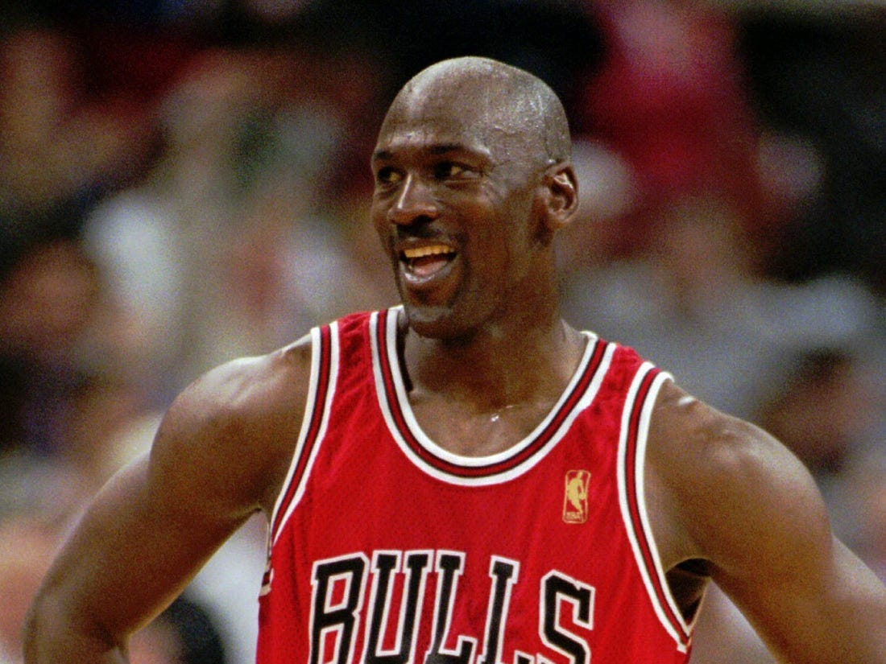

The Stars
Michael Jordan (SG)
Michael Jordan, from the University of North Carolina, is widely considered to be the greatest basketball player of all time. He had a cutthroat approach to leadership and expected the best out of everyone. He is one of two players to win all six titles with the Bulls from 1991-1998.
Accolades:
- Six NBA titles (won Finals MVP in all six)
- Ten scoring titles
- Five NBA MVP Awards
- Ten All-NBA First Team Designations
- Nine All-Defensive First Team Honors
- Fourteen NBA All-Star Game Selections
Scottie Pippen (SF)

Scottie Pippen, from the University of Central Arkansas, is the other player besides Jordan to be a part of all six Bulls titles. He is considered to be one of the best "sidekicks" of all time. That being said, Pippen also was a tremendous player. Jordan has stated that without Pippen there are no titles for the Bulls.
Accolades:
- Six NBA Titles
- Three All-NBA First Team Designations
- Eight Consecutive All-Defensive First Team Honors
- Seven NBA All-Star Game Selections
Dennis Rodman (SF/PF)
Dennis Rodman, from Southeastern Oklahoma State, was the enforcer for the Bulls during their 1996-1998 championship runs. He was a prolific rebounder who was not afraid to defend himself and his teammates through whatever means necessary.
Accolades:
- Five NBA Titles(Three with Bulls)
- Two NBA All-Star Selections
- Two NBA Defensive Player of the Year Awards
- Seven NBA All-Defensive First Team Honors
- Seven time NBA Rebounding Champion
Toni Kukoč (SF/PF)
Toni Kukoč, from Croatia, was a 6 ft 10 in player, on the Bulls from 1993-2000, who was extremely versatile. He hit a decent amount of last second shots and was extremely helpful as someone Jordan could pass to when a shot was needed.
Accolades:
- Three NBA Titles
- One NBA Sixth Man of the Year Awards
- NBA All-Rookie Second Team
Horace Grant (PF/C)
Horace Grant, from Clemson University, was the enforcer on the Bulls for their first three titles. He was very much the Dennis Rodman before Rodman joined the Bulls in 1995
- Four NBA Titles (Three with Bulls)
- One NBA All-Star Selection
- Four NBA All-Defensive Second Team Honors
Role Players
- Steve Kerr (PG)
- Steve Kerr, from the University of Arizona, won titles with the Bulls from 1996-1998 and had a few big moments in multiple Finals games, the most famous of which being his go-ahead shot in the dwindling second of Game 6 of the 1997 NBA Finals.
- Ron Harper (PG/SG)
- Ron Harper, from Miami of Ohio, played with the Bulls form 1994-1999. Harper quickly realized he was a role player and prided himself in his defense and mid-range scoring.
- BJ Armstrong (PG)
- BJ Armstrong, from the University of Iowa, played with the Bulls from 1989-1995. Armstrong consistently averaged double digits in scoring while coming off the bench. He also lead the team after Jordan retired in 1993.
- John Paxson (PG)
- John Paxson, from the University of Notre Dame, played with the Bulls from 1985-1994. He was a clutch shooter and consistent defender. Paxon is best known for his go-ahead shot in the last second of 1993 NBA Finals.